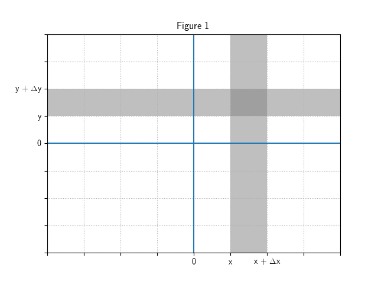
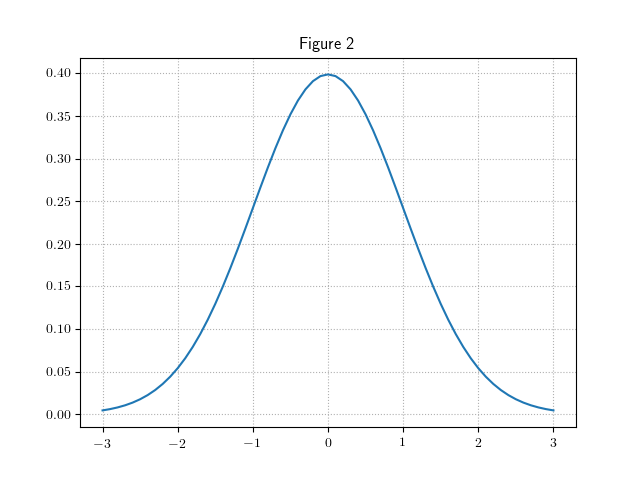

https://castatistics.wikispaces.com/file/view/normal+der..pdf
https://angms.science/doc/Math/Stat/Math_Stat_6_Gauss.pdf
Derivation of the normal distribution
We want to obtain the normal probability density function, given by:
f(x|\mu,\sigma^2) = \frac{1}{\sqrt{2\pi\sigma^2}} e^{-\frac{(x-\mu)^2}{2\sigma^2}}
from a few basic principles.
Consider that we are throwing a dart at the origin of the Cartesian plane,
but random errors in the throw produce varying results. We assume that:
- Large errors are less likely than small errors.
- Errors at the same distance from the origin are equally probable.
- Errors in the X axis are independent of errors in the Y axis.
The probability that a dart will fall in a vertical strip
x + \varDelta x, for an infinitesimally small
\varDelta x, is:
P(x \leq x_i \leq x + \varDelta x) = \int_{x}^{x + \varDelta x} P(x)\,dx \approx P(x) \varDelta x
Similarly, the probability that a dart will fall in a horizontal strip
y + \varDelta y, for an infinitesimally small
\varDelta y, is:
P(y \leq y_i \leq y + \varDelta y) \approx P(y) \varDelta y

From assumption 3, we assumed that errors in the X and Y axis are independent. Therefore, the
probability that a dart falls in the rectangular region given by the intersection between the
vertical strip x + \varDelta x and the horizontal strip
y + \varDelta y (as shown in Figure 1) is:
P(x \leq x_i \leq x + \varDelta x, y \leq y_i \leq y + \varDelta y) \approx P(x) \varDelta x P(y) \varDelta y
and from assumption 2, we assumed that orientation does not matter. Therefore, any region
at distance r from the origin and area
\varDelta x \varDelta y has the same probability. So:
P(x) P(y) \varDelta x \varDelta y = G(r) \varDelta x \varDelta y
P(x) P(y) = G(r)
Where function G is the probability that a dart falls at
point (x, y).
Differentiating both sides of the equation with respect to the angle of the throw
\theta, we get (Equation 1):
P(x)\frac{d P(y)}{d \theta} + P(y) \frac{d P(x)}{d \theta} = 0
From assumption 2 we can say that Probability G(r)
is independent of \theta:
\frac{d G(r)}{d \theta} = 0
Also, observe that:
x = r cos(\theta)
y = r sin(\theta)
And:
\frac{d x}{d \theta} = - r sin(\theta)
\frac{d P(x)}{d \theta} = \frac{d P(x)}{dx} \frac{d x}{d \theta}
\frac{d P(x)}{d \theta} = - \frac{d P(x)}{dx} r sin(\theta)
Similarly:
\frac{d P(y)}{d \theta} = \frac{d P(y)}{dy} r cos(\theta)
Replacing \frac{d P(x)}{d\theta} and
\frac{d P(y)}{d\theta} in Equation 1, we get:
P(x)\frac{d P(y)}{dy} r cos(\theta) - P(y)\frac{d P(x)}{dx} r sin(\theta) = 0
Replacing r cos(\theta) by x
and r sin(\theta) by y, we get:
P(x)\frac{d P(y)}{dy} x - P(y)\frac{d P(x)}{dx} y = 0
Equation 2
\frac{P'(x)}{x P(x)} = \frac{P'(y)}{y P(y)}
Note that from Assumption 3, given x_i,
\frac{P'(x_i)}{x_i P(x_i)} = C_1 \ \forall y where C_1
is a constant. And, given y_i,
\frac{P'(y_i)}{y_i P(y_i)} = C_2 \ \forall x where C_2
is a constant.
The only way for Equation 2 to hold, is if C_1 = C_2 = C. Therefore:
\frac{P'(x)}{x P(x)} = \frac{P'(y)}{y P(y)} = C
Solving for P(x):
\frac{P'(x)}{x P(x)} = C
\frac{P'(x)}{P(x)} = C x
Which is an Ordinary Differential Equantion. By integrating both sides we get:
\int \frac{P'(x)}{P(x)} \ dx = \int C x \ dx
ln(P(x)) = \frac{C}{2} x^2 + c
Exponentiating:
P(x) = e ^ {\frac{C}{2} x^2 + c}
P(x) = e^c e ^ {\frac{C}{2} x^2}
Equation 3:
P(x) = A e ^ {\frac{C}{2} x^2}
In Assumption 1, we assumed that large errors are less likely that small errors. Therefore,
we know that C must be a negative number. So we rewrite Equation 3
as:
P(x) = A e ^ {-\frac{k}{2} x^2}
with a positive k.
This is the basic form of the normal distribution. We now need to determine appropriate values
for A and k.
The coefficient A
For P(x) to describe a probability distribution, the total area under
the curve must be 1.
\int_{-\infty}^{\infty} A e ^ {-\frac{k}{2} x^2} \ dx = 1
Equation 4:
\int_{-\infty}^{\infty} e ^ {-\frac{k}{2} x^2} \ dx = \frac{1}{A}
Equation 3 is a symmetrical function because x^2 > 0 .
Since equation 3 is a symmetrical function, we have that:
\int_{-\infty}^{\infty} e ^ {-\frac{k}{2} x^2} \ dx = 2 \int_{0}^{\infty} e ^ {-\frac{k}{2} x^2} \ dx
\int_{0}^{\infty} e ^ {-\frac{k}{2} x^2} \ dx = \frac{1}{2 A}
Similarly:
\int_{0}^{\infty} e ^ {-\frac{k}{2} y^2} \ dy = \frac{1}{2 A}
Then we write the double integral:
\int_{0}^{\infty} e ^ {-\frac{k}{2} x^2} \ dx \int_{0}^{\infty} e ^ {-\frac{k}{2} y^2} \ dy = \frac{1}{4 A^2}
This part demands proof:
\int_{0}^{\infty} \int_{0}^{\infty} e ^ {-\frac{k}{2} (x^2 + y^2)} \ dy\ dx = \frac{1}{4 A^2}
We then map the double integral to Polar Coordinates.
http://tutorial.math.lamar.edu/Classes/CalcIII/DIPolarCoords.aspx
\int_{0}^{\frac{\pi}{2}} \int_{0}^{\infty} e ^ {-\frac{k}{2} r^2} r \ dr\ d\theta = \frac{1}{4 A^2}
We then apply the substitution rule to solve the integral. Note that the upper limit
also changes to -\infty
since the sign of
u is always negative for any r.
http://www.math.northwestern.edu/~mlerma/courses/math214-2-03f/notes/c2-subs.pdf
u = -\frac{k}{2} r^2
\frac{du}{dr} = -k r
-\frac{du}{k} = r \ dr
-\frac{1}{k} \int_{0}^{\frac{\pi}{2}} \int_{0}^{-\infty} e ^ {u} \ du\ d\theta = \frac{1}{4 A^2}
\int_{0}^{-\infty} e ^ {u} \ du = -1
\frac{1}{k} \int_{0}^{\frac{\pi}{2}} d\theta = \frac{1}{4 A^2}
\frac{\pi}{2k} = \frac{1}{4 A^2}
A = \sqrt{\frac{k}{2\pi}}
Finally:
P(x) = \sqrt{\frac{k}{2\pi}} e ^ {-\frac{k}{2} x^2}
The coefficient k
It is often useful to characterize distributions by their mean and variance.
The mean m of P(x) is given by:
\mu = \int_{-\infty}^{\infty} x P(x) \ dx
Since x P(x) is and odd function (symmetrical in the x-axis):
\mu = 0
The variance \sigma^2 of P(x) is given by:
\sigma^2 = \int_{-\infty}^{\infty} (x - \mu)^2 P(x) \ dx
As before, we integrate only on the positive axis, doubling the value:
\sigma^2 = \int_{-\infty}^{\infty} x^2 P(x) \ dx
\sigma^2 = 2\sqrt{\frac{k}{2\pi}} \int_{0}^{\infty} x^2 e ^ {-\frac{k}{2} x^2} \ dx
We solve this integral by parts:
http://www.mathcentre.ac.uk/resources/uploaded/mc-ty-parts-2009-1.pdf
\int u\ dv = uv - \int v\ du
u = x
dv = x e ^ {-\frac{k}{2} x^2} dx
v = -\frac{1}{k} e ^ {-\frac{k}{2} x^2}
du = 1\ dx
\sigma^2 = 2\sqrt{\frac{k}{2\pi}} \lim_{M\to\infty} \left.-\frac{x}{k} e ^ {-\frac{k}{2} x^2}\right|_{0}^{\infty} + \frac{1}{k} \int_{0}^{\infty} e ^ {-\frac{k}{2} x^2} dx
Now we evaluate:
\lim_{M\to\infty} \left.-\frac{x}{k} e ^ {-\frac{k}{2} x^2}\right|_{0}^{\infty} =
\lim_{x\to\infty} -\frac{x}{k} e ^ {-\frac{k}{2} x^2} - \lim_{x\to 0} -\frac{x}{k} e ^ {-\frac{k}{2} x^2}
\lim_{x\to\infty} -\frac{x}{k} e ^ {-\frac{k}{2} x^2} = -\frac{1}{k} \lim_{x\to\infty} \frac{x}{e ^ {\frac{k}{2} x^2}}
Using L'Hospital's Rule:
http://ecalculo.if.usp.br/ferramentas/limites/regras_lhospital/regras_lhospital.htm
\lim_{x\to\infty} \frac{x}{e ^ {\frac{k}{2} x^2}} = \lim_{x\to\infty} \frac{1}{k e ^ {\frac{k}{2} x^2} x} = 0
\lim_{M\to\infty} \left.-\frac{x}{k} e ^ {-\frac{k}{2} x^2}\right|_{0}^{\infty} = 0 - \lim_{x\to 0} -\frac{x}{k} e ^ {-\frac{k}{2} x^2} = 0
Then, we have that:
\sigma^2 = \frac{2}{k}\sqrt{\frac{k}{2\pi}} \int_{0}^{\infty} e ^ {-\frac{k}{2} x^2} dx
And we know from our previous work that:
\int_{0}^{\infty} e ^ {-\frac{k}{2} x^2} dx = \frac{1}{2A}
And:
A = \sqrt{\frac{k}{2\pi}}
\int_{0}^{\infty} e ^ {-\frac{k}{2} x^2} dx = \frac{1}{2}\sqrt{\frac{2\pi}{k}}
\sigma^2 = \frac{2}{k}\sqrt{\frac{k}{2\pi}} \frac{1}{2}\sqrt{\frac{2\pi}{k}}
\sigma^2 = \frac{1}{k}
We had obtained the probability distribution in terms of k:
P(x) = \sqrt{\frac{k}{2\pi}} e ^ {-\frac{k}{2} x^2}
And now we know that:
k = \frac{1}{\sigma^2}
Replacing k in the equation we can describe the
probability distribution in terms of its mean and variance:
P(x) = \frac{1}{\sqrt{2\pi\sigma^2}} e^{-\frac{x^2}{2\sigma^2}}
And, by doing a horizontal shift to center the distribution at the mean,
we finally get the canonical form:
f(x|\mu,\sigma^2) = \frac{1}{\sqrt{2\pi\sigma^2}} e^{-\frac{(x-\mu)^2}{2\sigma^2}}
With the recognizable form:
